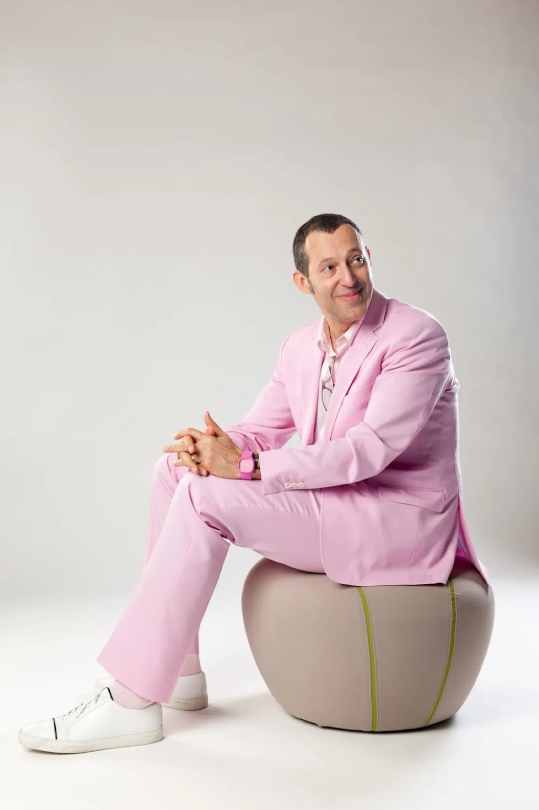
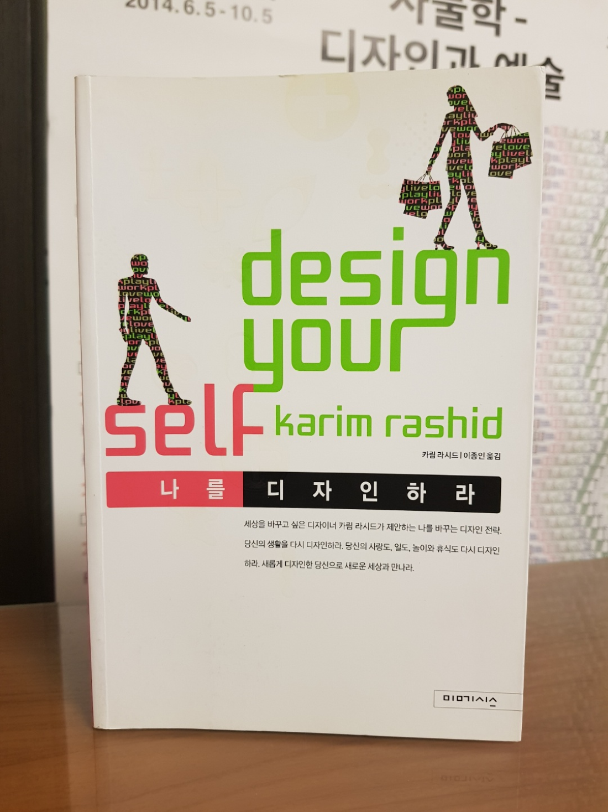

카림 라시드 (Karim Rashid)
1960년~

DESIGN MUST EVOLVE US AND CREATE A BEAUTIFICATION AND BETTERMENT FOR SOCIETY
디자인은 인간을 진화시키고 더 아름답고 나은 사회를 만들어야 한다
1960년 이집트 카이로 출생. 현재는 뉴욕에 스튜디오를 두고 전 세계를 종횡무진하며 활동하고 있는 산업 디자이너다. 핑크색, 형광 라임색 등 강렬한 색상군과 유기적인 곡선이 그의 디자인 특징. 그의 작품은 필라델피아 미술관, 뉴욕의 현대미술관, 런던의 영국 디자인 박물관 등에 영구 소장되어 있다. <나는 세상을 바꾸고 싶다>라는 책을 출간하기도 했으며, 디자인을 좀 더 대중화해야 한다는 ‘디자인 민주주의’를 주장하기도 한 그는 어쨌거나 별난 디자이너다. www.karimrashid.com
[출처] 디자인하우스 (월간디자인 2008년 3월호)

"나를 디자인하라"
카림 라시드 저서
"쓰레기통을 디자인하는 일과 인생을 디자인하는 일은 근본적으로 같다."
[디자인]을 활용한 인생전략! 인생을 다시 디자인하라!
이 책은 2008년 미메시스가 펴낸 카림 라시드의 『나를 디자인하라』를 2015년에 맞게 새로운 판형과 편집으로 [다시 디자인한] 자기 계발서이다. 마치 어제 쓴 것처럼 생생하게 살아 있는 카림 라시드의 인생 훈수는 2015년 새롭게 인생을 시작할 많은 이들에게 날것 그대로의 생활 지침이 될 것이다. 그는 휴지통을 디자인하는 원칙과 인생을 디자인하는 원칙은 본질적으로 같다고 말한다. 실제로 그가 디자인한 쓰레기통 [가르보]는 전 세계 수백만 소비자의 선택을 받아 역사상 가장 뛰어난 쓰레기통이 되었다. 무엇이 이 전설적인 사건을 가능케 했는가. 만약 이 쓰레기통이 우리 인생이자 일, 사랑의 표상이라면? 카림 라시드가 [가르보]를 디자인했듯이 우리도 평범한 인생을 [가르보]처럼 잘 디자인된 인생으로 바꿀 수 있을까? 카림 라시드는 말한다. [가능하다, 지금 당장 당신을 새롭게 디자인하라!] 그의 디자인 지침은 독창적이고 섬세하며, 무엇보다 매우 단순하다. 현 상태를 세밀하게 들여다보고, 발견되는 문제점을 창조적 발상으로 해결하는 것. 조금이라도 짜증나게 하는 일, 시간을 잡아먹는 일들은 없애고, 그 시간에 생각, 창조, 사랑, 꿈의 실현에 힘 쏟도록 하는 것이 [잘 디자인된 인생]이다. 본문은 이 과정에 도움이 되는 지혜를 전수한다. Live(생활), love(사랑), work(일), play(휴식) 등 4개 주제로 나누어 [인생을 새롭게 디자인할 힌트]를 제공할 뿐 아니라 어떻게 바꿀 수 있는지에 대해 세세한 방법도 알려 준다. 또한 몸과 마음에서부터 옷, 집, 사랑, 인간관계, 일, 놀이, 휴식에 이르기까지, 삶의 모든 면에 대해 근본적인 생각을 다시 하게 만드는 질문들로 가득하다. 뒷부분에는 생후 1개월부터 100세에 이르기까지, 인생 주기에 맞춰 [할 일]을 체크할 수 있도록 [Life Cycle]도 첨부하였다.